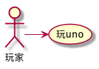
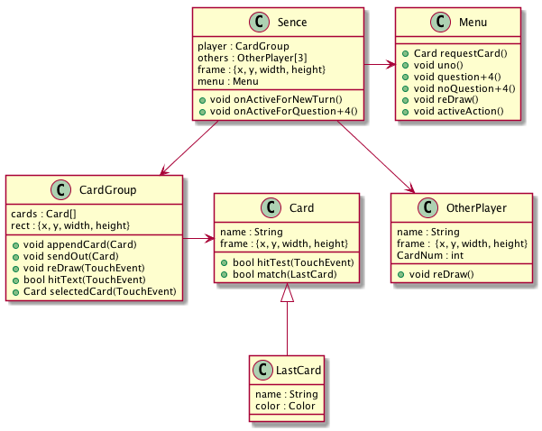
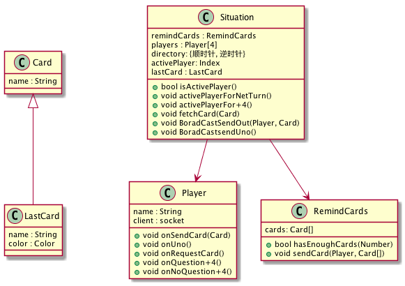
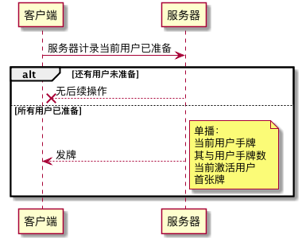
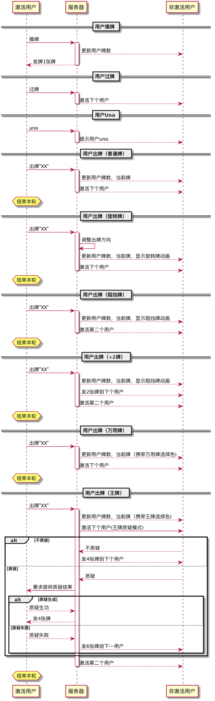

index
Table of Contents
1 用例

2 类图
2.1 客户端

2.2 服务器端

3 时序
3.1 图例


3.2 说明
3.2.1 客户端实现以下监听事件
- socket.on('addAsCards', function(info)) // 服务器向用户发牌
info 格式: ["XX", "XX"]
收到的牌的张数，由数组个数决定。
+2两张，王牌4张，摸牌1张
收到牌后更新用户手牌
- socket.on('updateUserCardCount', function(info)) // 更新某一用户的手牌数
info 格式: {username : number}
更新相应用户的手牌数
- socket.on('userUno', function(info)) // 某一用户uno
info 格式: "username"
相应用户uno
- socket.on('updateLastCard', function(info)) // 更新出版堆
info 格式: "r1"
出牌堆显示相应牌
注：如为特殊牌，则显示相应动画，万应牌与王牌的底色，改为选中色
- socket.on('activeByNewTurn', function()) // 轮到当前用户出牌
用户可以出牌，摸牌，uno
用户选择摸牌后，“摸牌”按钮变成“过牌”，用户可过牌
用户出牌或过牌后，取消激活状态
- socket.on('activeByW+4', function()) // 当前用户选择是否质疑王牌
用户可以选择，质疑，不质疑
用户选择后，取消激活状态
- socket.on('requireResult', function()) // 要求用户提供质疑结果
emit('uploadResult', true)
- socket.on('statstics', function()) // 要求用户统计积分
emit('uploadScore', 100)
- socket.on('scoreList', function()) // 展示积分
更新各用户积分
3.2.2 服务器实现以下监听事件
- socket.on('ready', function()) // 用户准备
如果不足4人，无操作
如果等于4人，单播各用户emit("addAsCards", ["XX", "XX", "XX", "XX", "XX", "XX", "XX"])
组播各用户emit('updateUserCardCount', +7)
组播emit('updateLastCard', "XX")
- socket.on('getCard', function()) // 激活用户摸牌
单播激活用户emit('addAsCards', "XX")
组播emit('updateUserCardCount', +1)
- socket.on('pass', function()) // 激活用户过牌
直接激活下个用户emit('activeByNetTurn')
- socket.on('uno', function()) // 激活用户uno
组播emit('userUno', "username")
- socket.on('showAHand', function(info)) // 激活用户出牌
info 格式: "r1"
对应出牌逻辑
- 普通牌
组播emit('updateUserCardCount', -1)
组播emit('updateLastCard', "XX")
单播激活下个用户emit('activeByNetTurn')
- 旋转牌
变换方向标识
组播emit('updateUserCardCount', -1)
组播emit('updateLastCard', "XX")
单播激活下个用户emit('activeByNetTurn')
- 阻挡牌
组播emit('updateUserCardCount', -1)
组播emit('updateLastCard', "XX")
单播激活第二用户emit('activeByNetTurn')
- +2牌
组播emit('updateUserCardCount', -1)
组播emit('updateLastCard', "XX")
单播下一用户emit('addAsCards', ["XX", "XX"])
组播下一用户emit('updateUserCardCount', +2)
单播激活第二用户emit('activeByNetTurn')
- 万用牌
组播emit('updateUserCardCount', -1)
组播emit('updateLastCard', "XX")
单播激活下一用户emit('activeByNetTurn')
- 王牌
组播emit('updateUserCardCount', -1)
组播emit('updateLastCard', "XX")
单播激活下一用户emit('activeByW+4')
- 不质疑
单播下一用户emit('addAsCards', ["XX", "XX", "XX", "XX"])
组播下一用户emit('updateUserCardCount', +4)
- 质疑
emit('requireResult') 要求激活用户上传质疑结果
socket.on('uploadResult', function(info))
info 格式: true/false
如果质疑成功，则激活用户emit("addAsCards", ["XX", "XX", "XX", "XX"])
否则，下一用户emit("addAsCards", ["XX", "XX", "XX", "XX", "XX", "XX"])
- 不质疑
- 普通牌
- socket.on('uploadScore', function()) // 得到积分
组播emit('scoreList')